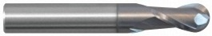

|
||||||||
| Series: | General Purpose | Part #: | 130-0500-401A | Description: | 1/2 2F FB LG EM ALTIN | Stock: | 0 | |
| Product Specification: General Purpose - Flat Bottom - 1/2" Shank - 4" OAL - 2.0" LOC | ||||||||
|  | ||||||||
| Series: | General Purpose | Part #: | 110-0500-201A | Description: | 1/2 2F FB EM ALTIN | Stock: | 119 | |
| Product Specification: General Purpose - Flat Bottom - 1/2" Shank - 3" OAL - 1.0" LOC | ||||||||